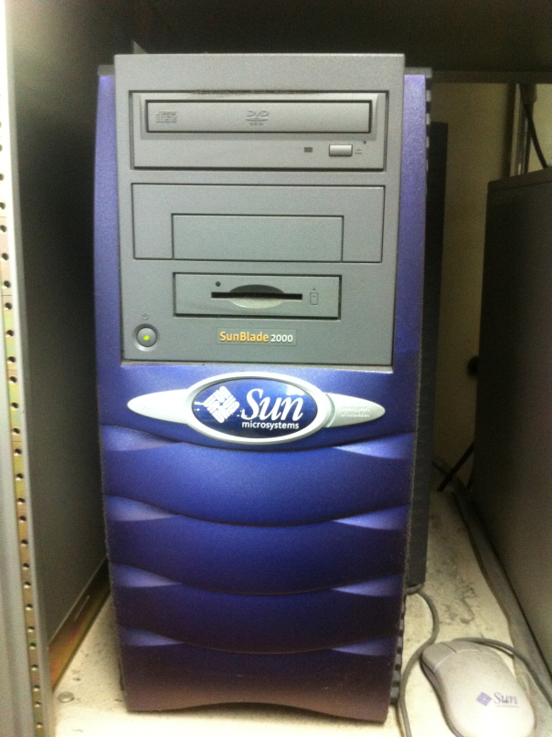
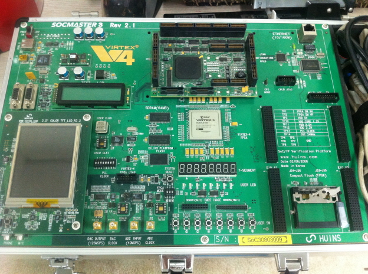
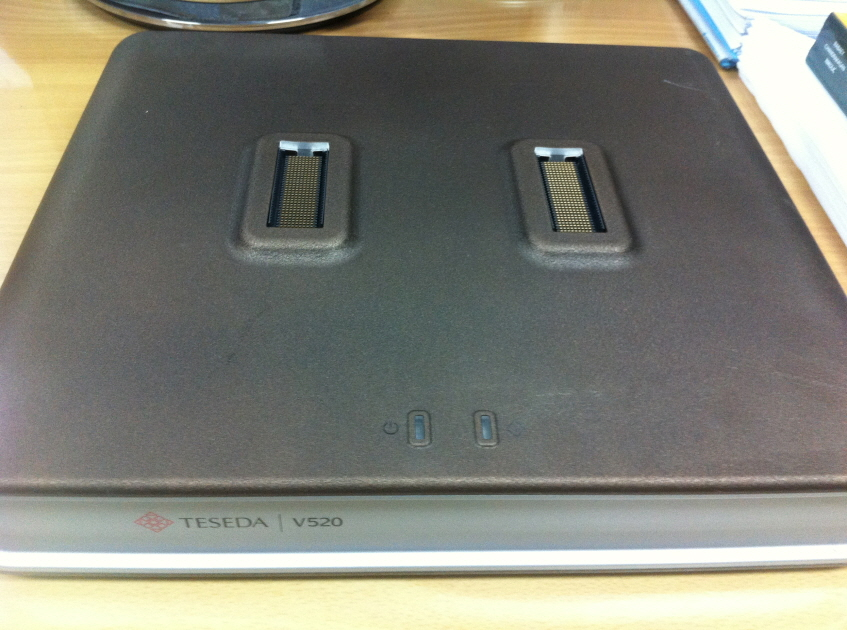

컴퓨터시스템 및 고신뢰성 SoC 연구실은 1994년에 설립되어 반도체 산업의 핵심인 SoC(System-on-Chip) 개발 전반에 대한 연구를 수행하고 있다. 이를 위해 본 연구실에서는 4개의 팀이 로직, 메모리 및 아날로그를 위한 설계, 테스트 및 DFT(Design-for-Testability) 관련 분야를 연구 중이다. 우리 연구실에서는 이러한 분야의 연구를 통해 지난 29년간 39명의 박사 및 68명의 석사 졸업생을 배출했으며, 현재 박사과정 17명, 석사과정 7명이 연구에 매진하고 있다.
본 연구실에서 연구 중인 분야를 소개하자면 다음과 같다.
우선 설계 분야의 경우 현재 인-메모리 컴퓨팅의 로버스트니스 향상을 위한 반도체 설계 기술 등의 선행기술 연구를 통해 SoC 설계 기술 개발에 힘쓰고 있으며, 그 결과 반도체 혁신 아이디어 공모전에서 최우수상을 수상하는 등의 성과를 내고 있다.
테스트의 경우 기존 연구를 통해 확보하고 있는 다수의 관련 기술을 바탕으로 아날로그, 메모리, 로직을 아우르는 테스트 전 분야를 연구 중이며 산학연구를 통해 ATE(Automatic Test Equipment) 장비 자체에 대한 연구도 수행하고 있다. 테스트 분야는 반도체 생산비용의 상당 부분을 차지하며, 그 중요성이 매우 클 뿐만 아니라 공정기술이 발달함에 의해 게이트당 생산비용이 점차 감소하는 데 반해 집적도가 높아짐에 따라 테스트 환경은 더욱 악화되므로 테스트 비용의 증가는 필연적이다. 따라서 이를 감소시키기 위한 다양한 테스트 용이화 설계 방안이 연구 중인데, 국내의 경우 이에 대한 연구 인프라가 매우 취약한 것이 사실이다. 하지만 우리 연구실에서는 많은 연구와 프로젝트를 통하여 이러한 점을 보완하기 위해 노력하고 있으며 실제로 국내의 테스트 관련 연구 실적의 상당수는 본 연구실에서 만들어지고 있다.
DFT 분야의 경우 Scan Compression, Logic BIST, BOST(Built-Off Self-Test), 메모리 BIST(Built-In Self-Test) / BIRA(Built-In Redundancy Analysis), Fault Diagnosis, TAM(Test Access Mechanism), Scheduling 및 SoC 테스트, 실리콘 디버그, 저전력 테스트 기법 등 관련 전 분야를 연구 중이다.
이렇게 여러 분야에서 연구를 원활하게 수행하기 위해서는 고가의 설계 장비 및 EDA 툴 등 설계 환경의 구축이 필수적인데 설계 툴의 경우 IDEC을 통한 구매를 통해 저가로 다수의 툴을 사용할 수 있는 환경이 비교적 잘 구축되어 있으며, 고성능 Workstation, FPGA 검증장비, Logic Analyzer, Desktop ATE 등 필요한 장비 대부분을 보유하고 있으므로 연구실 환경이 잘 정립되어 있다. 이를 기반으로 하여 다수의 연구 과제를 수행하고 있으며, 그 결과 다수의 MPW 제작 및 설계 경진대회에 참가하고 있다. 또한 매년 국내외 논문지 및 학술대회에 50여 건의 논문을 게재하는 등 활발한 연구 활동을 계속하고 있다.



이러한 연구 활동의 결과로 반도체 설계 분야의 경우 본 연구실에서 공동 연구로 수행한 Calm RISC 프로세서는 삼성전자에서 상용화될 정도로 그 성능을 인정받았으며, 현재 초저전압 회로 설계 기술, 3차원 반도체 설계 기술 등 차세대 반도체 기술 개발에 박차를 가하고 있다.
반도체 테스트 분야의 경우 본 연구실은 산학연의 다양한 연구 활동에 주도적인 역할을 담당해왔으며, 그 결과 메모리, 로직 및 아날로그를 위한 다수의 테스트 솔루션을 보유하고 있다. 이중 메모리 BIST 및 BISR, 로직 BIST, 그리고 SoC 테스트 솔루션 등은 IP화되어 있으며, 대기업 및 중소기업 등에 기술이전이 이루어진 바 있다.
또한 이와 관련하여 본 연구실은 많은 특허를 산출하였으며 SoC로 발전해가는 상황에 맞추어 SIPAC의 IP 설계 기준안 사업에 참여하여 테스트 설계 기준안을 확립했다. 테스트를 고려하여 반도체 설계를 수행한 경우, 고장 검출률 및 수율이 크게 향상될 수 있으므로 이는 설계자가 반드시 숙지해야 하는 사항이다.
IDEC의 지원을 받아서 설계 및 테스트 관련 교재도 여러 권 개발하였고 이중 ASIC 설계 실험 책은 지금도 본교에서 대학원 실험과목의 교재로 사용되고 있다.
또한 반도체 테스트 분야의 활발한 기술교류를 위해 설립된 한국반도체테스트학회의 설립에 주도적인 역할을 수행했다. 한국반도체테스트학회에서 주최하는 한국테스트학술대회(www.koreatest.or.kr)는 국내 유일의 반도체 테스트 전문 학술대회로서, 학계, 산업체, 반도체 장비업체 및 EDA 업체 등이 한자리에서 활발한 기술교류를 할 수 있는 환경을 조성함으로써 국내 반도체 테스트 기술 발전에 크게 기여하고 있다.